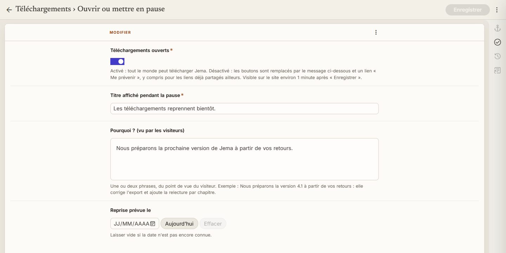
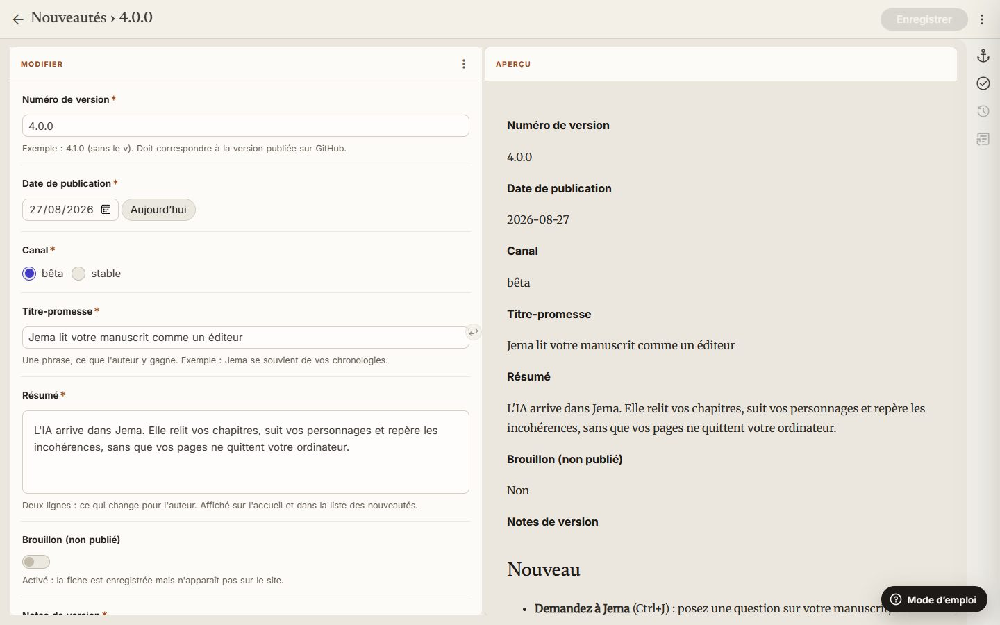

Le site se met à jour sans toucher au code.
Tout ce que vous enregistrez ici est publié sur le site en une à deux minutes. Ce guide explique chaque écran, pas à pas.
Comment ça marche
- Vous modifiez un contenu, puis vous cliquez sur Enregistrer en haut à droite.
- L'admin dépose la modification sur GitHub (le dépôt
Epirhos/jema_website), comme une nouvelle page dans un classeur. Rien ne se perd : chaque version est conservée. - Cloudflare voit la modification, reconstruit le site et le met en ligne : environ 1 à 2 minutes. Rechargez la page du site pour la voir.
Se connecter
- Ouvrez
jema.software/adminet choisissez Se connecter avec un jeton d'accès. - Collez votre jeton GitHub. Le navigateur s'en souvient : vous ne le collez qu'une fois par ordinateur.
Créer ou renouveler le jeton (tous les 90 jours)
- Sur GitHub : photo de profil → Settings → Developer settings → Personal access tokens → Fine-grained tokens → Generate new token.
- Nom :
Jema admin· Expiration : 90 jours · Resource owner :Epirhos· Repository access : Only select repositories →jema_website. - Permissions → Repository → Contents : Read and write. Cliquez sur Generate token et copiez-le immédiatement (il ne s'affiche qu'une fois).
Que voulez-vous faire ?
Mettre les téléchargements en pause
À utiliser quand la version proposée ne doit plus être installée (bug, préparation d'une mise à jour). Le site reste en ligne et explique la situation aux visiteurs.
- Colonne de gauche : Téléchargements → Ouvrir ou mettre en pause.
- Désactivez Téléchargements ouverts.
- Écrivez pourquoi, du point de vue du visiteur, en une ou deux phrases. Ajoutez la date de reprise si vous la connaissez.
- Enregistrer. Une à deux minutes plus tard, le site est en pause.

Ce que voient les visiteurs pendant la pause
- Le bouton « Télécharger » devient « Me prévenir à la reprise » (un e-mail prérempli vers l'adresse de contact).
- Un bandeau en haut de toutes les pages annonce la pause et la date de reprise.
- La section Télécharger affiche votre titre, votre raison et la date.
- Les liens déjà partagés (
jema.software/telecharger/windows…) mènent à cette explication au lieu du fichier.
Pour rouvrir : réactivez l'interrupteur et enregistrez. Le bandeau de pause disparaît de lui-même.
jema-releases → Releases → la version → Edit → Save as draft).Publier une nouvelle version
À faire après la publication des fichiers d'installation sur GitHub (dépôt jema-releases) : le site les trouve tout seul, il ne reste qu'à raconter ce qui change.
- Nouveautés → Nouveau.
- Numéro de version : exactement celui publié sur GitHub, sans le v (
4.1.0). - Titre-promesse : une phrase, ce que l'auteur y gagne. « Jema se souvient de vos chronologies » plutôt que « Nouveau moteur de chronologie ».
- Résumé : deux lignes. Il apparaît sur l'accueil (« Nouveau · v4.1.0 ») et dans la liste.
- Notes de version : gardez les rubriques Nouveau, Amélioré, Corrigé, Sécurité, À savoir, supprimez les vides. Une ligne par changement, en commençant par ce que l'auteur peut faire.
- Enregistrer. La fiche est en ligne à l'adresse
/nouveautes/4-1-0.

Ensuite, en 1 minute
- Réglages du site → Version de secours : mettez la nouvelle (
v4.1.0). Elle ne sert que si GitHub ne répond pas, mais elle doit rester à jour. - Facultatif : un bandeau « La version 4.1 est disponible » avec le lien
/nouveautes/4-1-0, et un article pour raconter les coulisses.
Écrire un article
- Journal → Nouveau.
- Titre, date, catégorie (Annonce, Coulisses, Conseil, Version) et un résumé d'une ou deux phrases : il s'affiche dans la liste et quand l'article est partagé sur les réseaux.
- Écrivez le texte. La barre d'outils au-dessus du texte gère les titres, le gras, les listes, les liens et les images.
- Pas encore prêt ? Activez Brouillon (non publié) avant d'enregistrer.
/journal/2026-12-01-titre) et ne change plus ensuite, même si vous modifiez le titre. Les liens partagés restent donc valables.Mise en forme
| Pour | Utilisez |
|---|---|
| Un intertitre | « Titre 2 » dans la barre d'outils (évitez le « Titre 1 », réservé au titre de l'article) |
| Une citation | Le bouton citation : elle s'affiche avec le liseré ocre du site |
| Un lien vers le site | Une adresse qui commence par / : /nouveautes, /guide, /#telecharger |
Modifier une page (Bêta, FAQ, mentions légales…)
- Pages → cliquez sur la page.
- Modifiez le contenu. Pour une page légale, mettez à jour la Dernière mise à jour.
- Enregistrer.
| Page | Adresse sur le site |
|---|---|
| La bêta | /beta |
| Questions fréquentes | /faq |
| Mentions légales, confidentialité, licence bêta | /legal/… |
Afficher un bandeau d'annonce
Une ligne indigo en haut de toutes les pages, pour une information du moment : nouvelle version, fin de la bêta, événement.
- Bandeau → Modifier le bandeau.
- Activez Afficher le bandeau, écrivez une phrase courte, et si besoin un lien (
/nouveautes/4-1-0) avec son texte (« Voir les nouveautés »). - Enregistrer. Pour le retirer : désactivez, enregistrez.
Pendant une pause des téléchargements, le bandeau annonce la pause de lui-même et remplace temporairement le vôtre.
↑ Haut de pageAjouter une image
- Dans le texte d'un article ou d'une page, cliquez sur le bouton image de la barre d'outils, puis choisissez ou glissez le fichier depuis votre ordinateur.
- Ajoutez toujours un texte alternatif qui décrit l'image : il est lu aux personnes malvoyantes et affiché si l'image ne charge pas.
- Formats conseillés : JPG ou WebP pour les photos et captures, moins de 500 Ko et 2000 pixels de large au maximum.
- Les images sont rangées dans
public/images/uploads. L'icône image en haut à gauche de l'admin les liste toutes.
Les réglages (à modifier rarement)
| Réglage | Quand le changer |
|---|---|
| Bêta | Dates et pastille de la bêta ; désactivez « Bêta en cours » à la fin de la bêta. |
| Configuration requise | Si la mémoire nécessaire ou les systèmes pris en charge changent. |
| Version de secours | À chaque nouvelle version (voir Publier une version). |
| E-mail de contact, Dépôt GitHub des versions, Adresse du site | Verrouillés par sécurité : visibles mais non modifiables ici, pour qu'un accès volé à l'admin ne puisse ni détourner les messages des visiteurs ni faire télécharger autre chose que Jema. Pour les changer : manuel technique, chapitre « Sécurité ». |
| Mesure d'audience | Identifiant Umami. Vide = plus aucune mesure. |
Revenir en arrière
Chaque enregistrement est conservé sur GitHub avec un message clair (contenu : modifie journal « … »). Rien n'est jamais perdu.
- Le plus simple : rouvrez le contenu, corrigez, enregistrez.
- Retrouver une ancienne version : sur GitHub, dépôt
jema_website→ ouvrez le fichier (par exemplesrc/content/journal/…) → bouton History. Ouvrez la version voulue, copiez le texte et recollez-le dans l'admin. - Un contenu supprimé par erreur : même chemin depuis l'onglet Commits du dépôt : retrouvez le commit « supprime… », ouvrez le fichier tel qu'il était, recréez-le dans l'admin.
Ça ne marche pas comme prévu
| Ce que vous voyez | Que faire |
|---|---|
| Ma modification n'apparaît pas sur le site | Attendez 2 minutes et rechargez la page (Ctrl+F5). Toujours rien : Cloudflare → Workers & Pages → jema → Deployments. Une ligne rouge = la construction a échoué ; ouvrez-la pour lire l'erreur (souvent un champ obligatoire vide ou une date invalide). |
| L'admin refuse le jeton, ou « Bad credentials » | Le jeton a expiré (90 jours) ou a été révoqué : créez-en un nouveau. |
| « Enregistrer » reste grisé | Rien n'a changé, ou un champ obligatoire (marqué d'une étoile ocre) est vide ou mal rempli : il est signalé en rouge. |
| L'admin affiche une page blanche | Rechargez. Si cela persiste, essayez un autre navigateur et consultez le manuel technique (chapitre Admin). |
Pour tout ce qui touche au code, à l'hébergement ou au domaine : manuel technique, fichier docs/manuel/Manuel-site-Jema.pdf du dépôt.